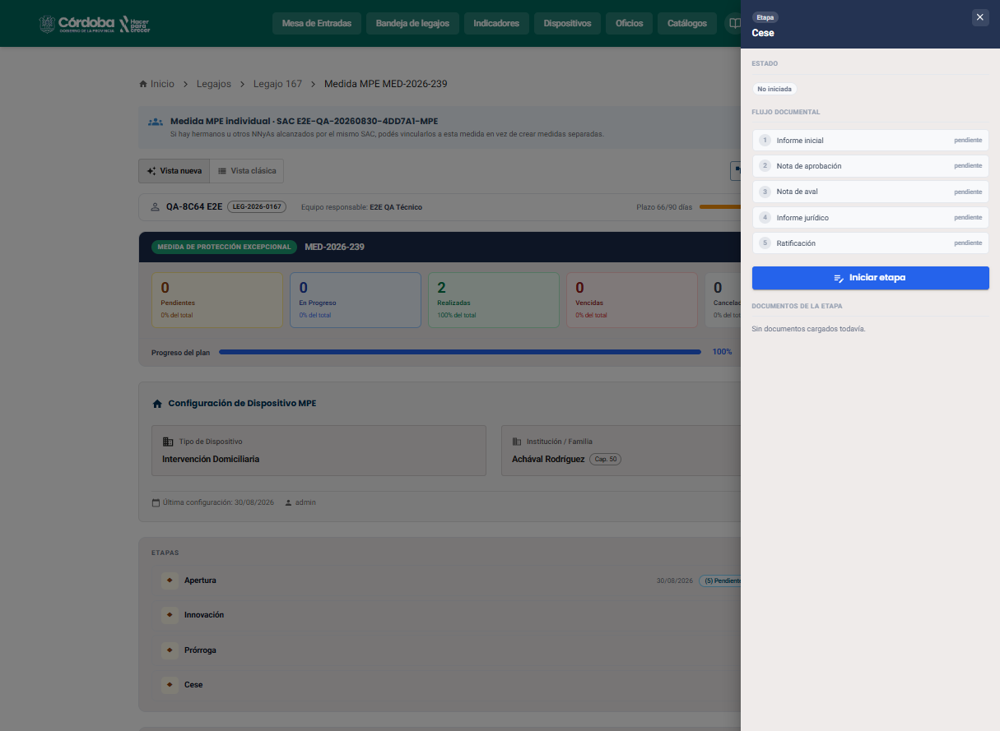
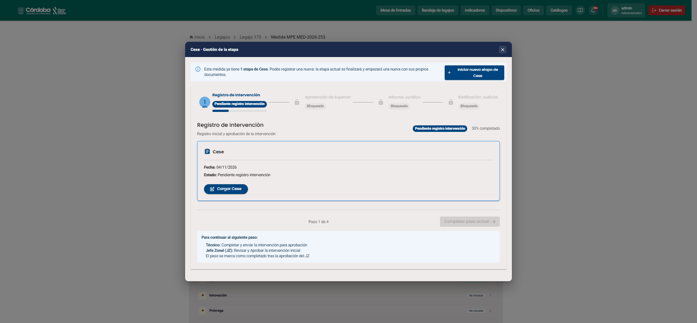
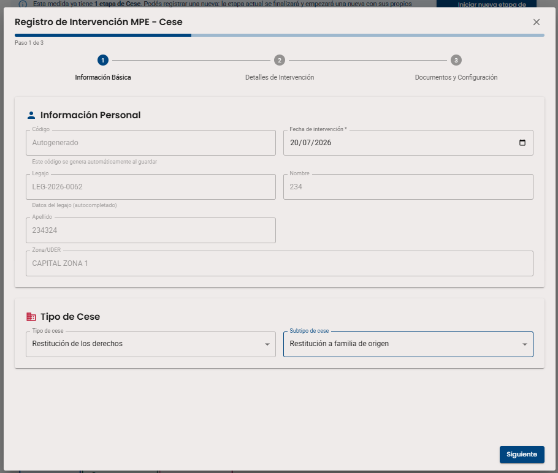
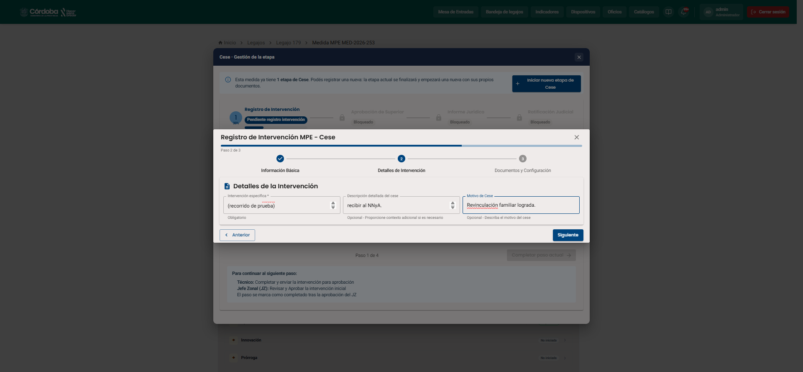
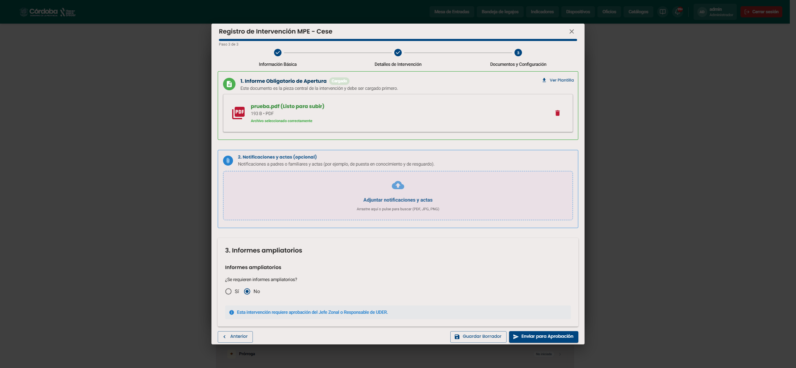
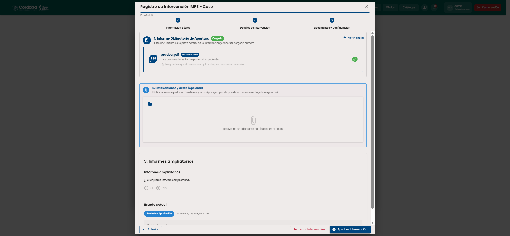
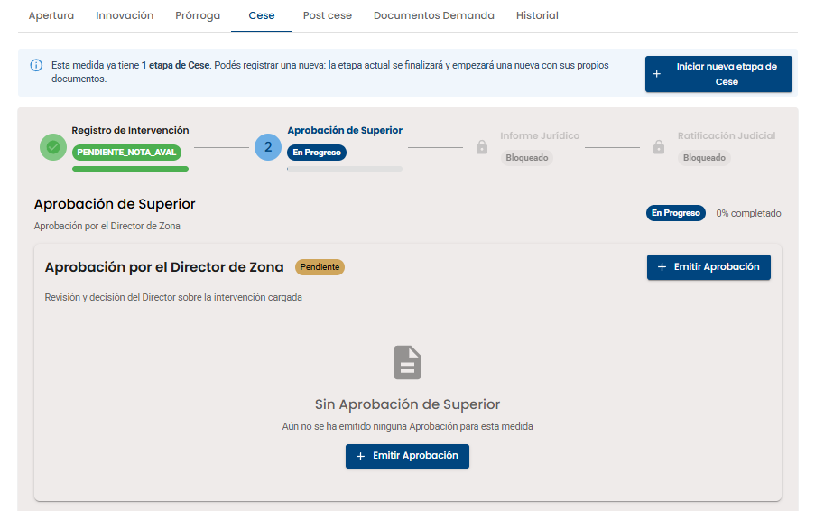
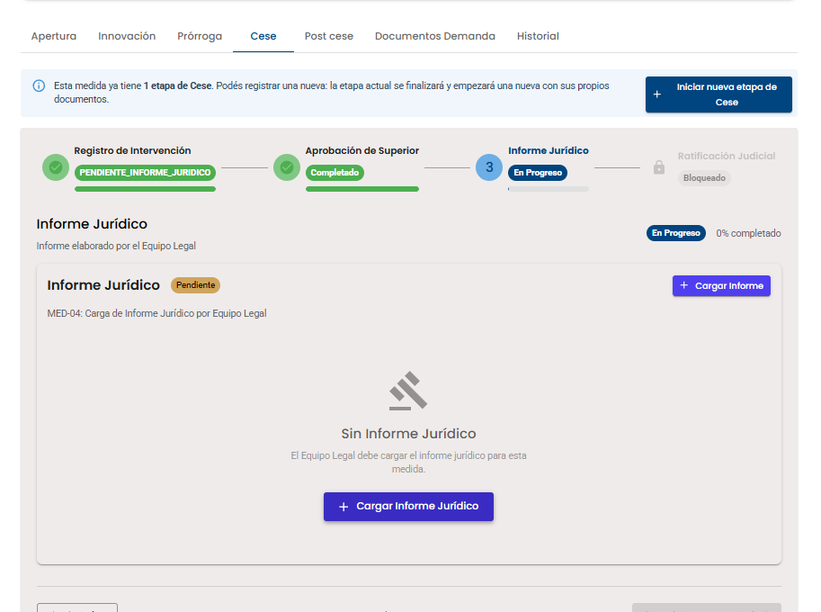
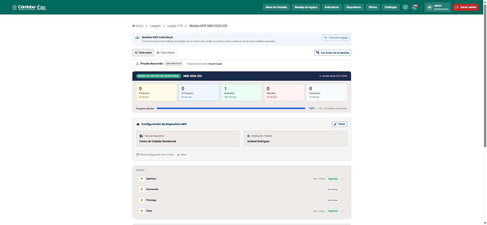

El cierre de una MPE requiere aprobaciones institucionales: Técnico (3 pasos) → Director de Zona (aprobación) → Equipo Legal (informe jurídico). Cuando Legales envía el Informe Jurídico, la medida cambia a estado "CERRADA".









Simulá el proceso de Cese de MPE y el circuito de firmas. Completá la solicitud del técnico y aprueba como JZ, Director y Legales.